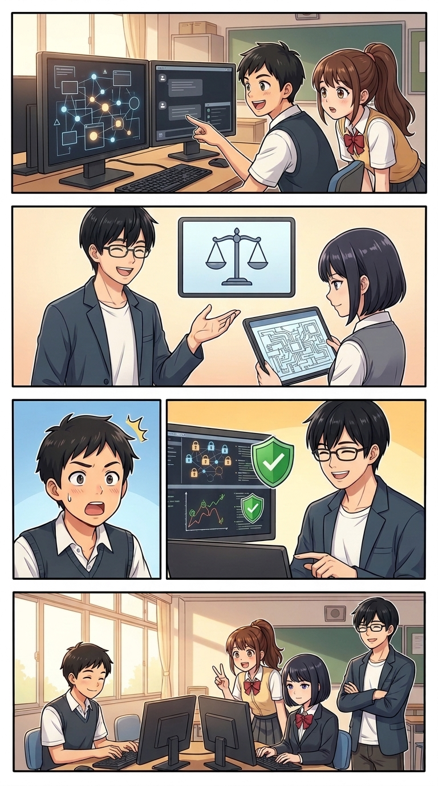
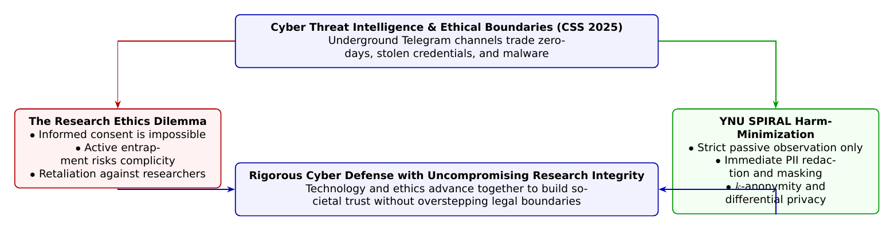

🎨 4コマ漫画挿絵（文字なし）
AI高解像度生成
▲ 【挿絵】青葉台高校 情報科学部＆帝都科学大学サイバーディフェンス・ラボでの実践シーン
💬 4コマ漫画キャラクターセリフ (Story Dialogue Script)
日・英バイリンガル (JA / EN)[悠真]「待って葵ちゃん！ 技術的に潜入可能でも、研究倫理と法的な一線を越えたらアウトなんだ」
[Yuma] "Hold on, Aoi! Even if technically trivial, crossing ethical and legal lines invalidates the entire investigation!"
[蓮]「能動的な誘導（おとり捜査まがい）を排して、受動的収集とデータ匿名化を徹底するんだね！」
[Ren] "So we avoid proactive entrapment and strictly enforce passive observation with complete anonymization!"
[葵]「悪を暴く側が、知らず知らずのうちに倫理の暗黒面に堕ちないための『正義の規律』なんだね！」
[Aoi] "It's the ultimate discipline of justice—ensuring investigators never slide into the ethical dark side!"
[全員]「技術と倫理のハイブリッドこそが、真のサイバー守護者の証だ！」
[All] "The true hybrid of cutting-edge tech and rock-solid ethics is the hallmark of cyber guardians!"
📖 小説本文
初冬の澄んだ風がそよぐ青葉台高校の情報科学部室。放課後の静けさの中、部室の中央に置かれた大型ディスプレイには、無数のノードが網の目のように交差する巨大なグラフネットワークが映し出されていた。
「……これ、全部Telegramのチャンネルなの？」
橘葵が身を乗り出して画面を指差した。ノードのラベルには、ダークウェブやアンダーグラウンドフォーラムで飛び交うような不穏な隠語が並んでいる。マルウェアの売買、盗難認証情報のリスト、フィッシングキットの配布、ランサムウェアの協力者募集――。
「ええ」神崎蓮がノートPCのキーボードを叩きながら説明する。「最近のサイバー犯罪エコシステムは、Tor上のオニオンサイト（ダークウェブ）から、より手軽で即時性の高いTelegramやDiscordなどのメッセージングアプリへと急速にシフトしているんです。APIを使えばボットで大量の公開・準公開チャットログをクローリングできますし、潜入アカウントを作れば秘密グループに紛れ込むことだって……」
「それなら話は早いわ！」葵が拳を握りしめた。「私たちもTelegramのアカウントを作って潜入捜査（HUMINT: Human Intelligence）をやっちゃえばいいじゃない！ 攻撃者のチャットに直接入って、次にどの企業が狙われているかリアルタイムで聞き出せば、被害を未然に防げるヒーローになれるよ！」
「葵ちゃん、ちょっとストップ！」
扉を開けて入ってきた大学1年生の城崎悠真が、葵の勢いを優しく、だが断固とした口調で制した。手元には、横浜国立大学SPIRAL（先端情報科学・物理・数理・システム研究拠点）と早稲田大学・NICTの共同研究チームが情報処理学会CSS 2025（コンピュータセキュリティシンポジウム2025）で発表した最新論文の別刷りが握られている。
「えっ、悠真先輩？ どうして止めるの？ 悪者を暴くための情報収集なんだから、いいことじゃない！」
「サイバーセキュリティ研究において、もっとも危険で繊細な落とし穴がそこにあるんだよ」悠真は息を整え、黒板の前に立った。「技術的にできることと、研究倫理・社会的正義として許されることの間には、決して踏み越えてはならない深いクレバスが存在するんだ。今日のテーマは、横浜国大SPIRALの久保裕貴さん、吉岡克成教授らの最新研究――**『メッセージングプラットフォーム上のアンダーグラウンドコミュニティ調査における人的情報収集の倫理的課題とインフォームド・コンセント』**だよ」
白石結衣が眼鏡のブリッジを押し上げ、静かに頷いた。 「医学や社会科学の実験では、被験者に研究の目的とリスクを説明して同意を得る『インフォームド・コンセント（Informed Consent）』が絶対条件です。しかし、サイバー犯罪チャットに潜入して『これからセキュリティ研究のために皆様のチャットログを収集します。よろしいですか？』と尋ねたらどうなるでしょう？」
「……即座にキック（追放）されて、調査アカウントが燃やされるか、証拠隠滅されてグループごと消去されちゃうね」蓮が苦笑いした。
「その通り」悠真がプロジェクターのスイッチを入れた。「犯罪コミュニティ調査では、事前の明示的同意を得ることが原理的に不可能に近い。だからといって『犯罪者相手なら何をしてもいい』という無法地帯（Wild West）を研究者が認めてしまえば、捜査機関でもない学術機関が不当なおとり捜査やプライバシー侵害、さらには犯罪幇助に加担してしまう危険があるんだ」
スクリーンに、SPIRALチームが体系化した**「サイバー脅威HUMINT倫理フレームワーク」**の図が鮮やかに投影された。
---
📊 セキュリティ構造図解 (TikZ LuaLaTeX生成)
国家安全基準・工学図解
▲ 【技術構造図】IPAデジタルスキル標準・国際規格に準拠した仕組みのモデル化